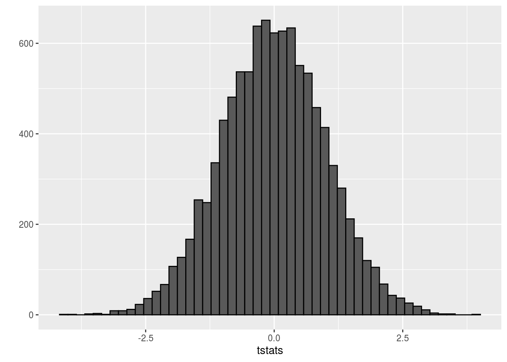
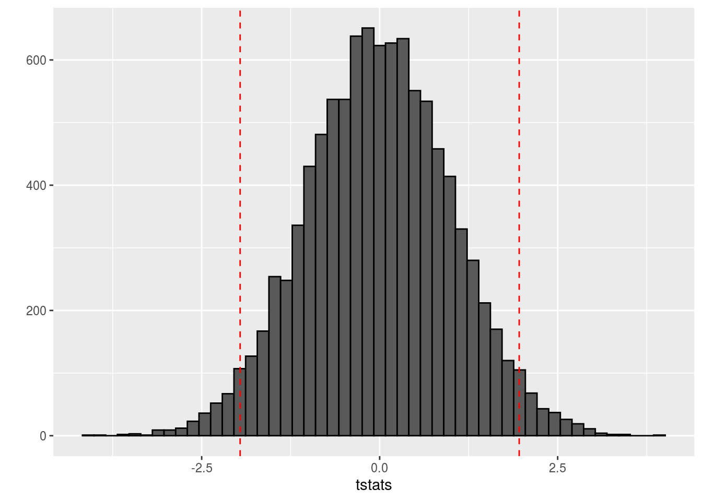
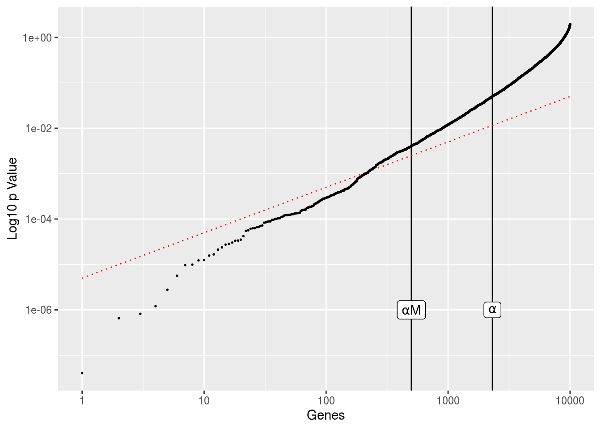
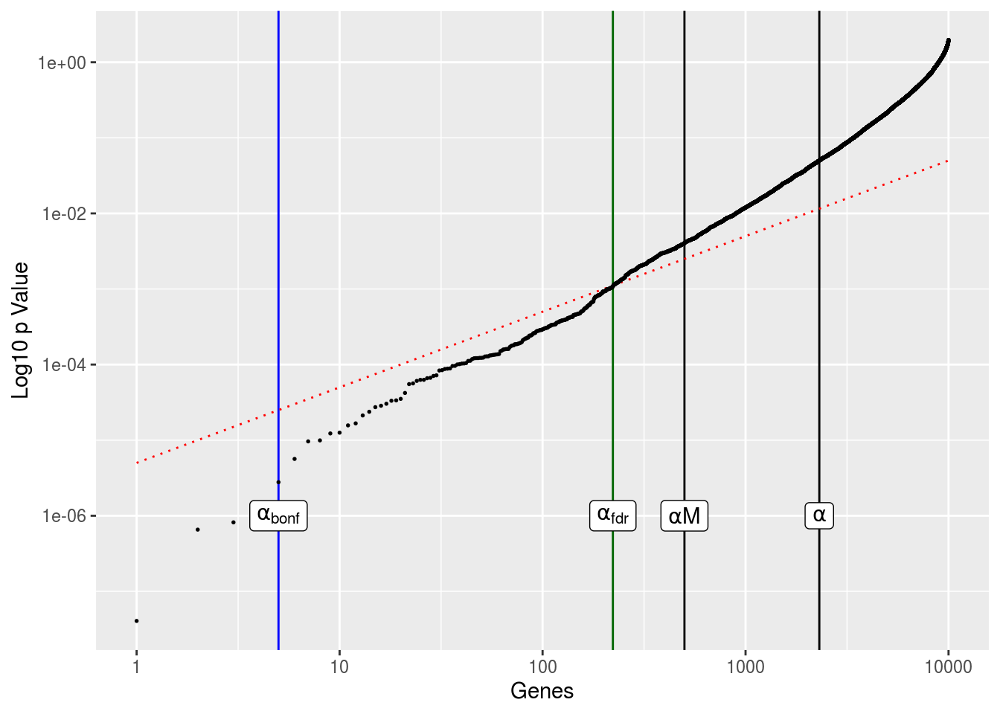

Chapter 10 Multiple Comparisons
library(tidyverse)
library(shiny)10.1 Hypothesis Testing and Power
When we perform a statistical hypothesis test, we measure a given effect, assess its probability of occuring given a null hypothesis \(H_0\) (i.e., the hypothesis that there is no relationship between our test groupings), and reject said null if the probability falls below a particular threshold. We “accept” \(H_1\) and consider this test to be statistically significant. We aren’t always right, however; hence, hypothesis testing is prone to false positives (type I errors) and false negatives (type II errors):
| Reject \(H_0\) | Reject \(H_1\) | |
|---|---|---|
| False \(H_0\) | True Positives (TP) | False Negatives (FN) |
| True \(H_0\) | False Positives (FP) | True Negatives (TN) |
You’ll often see the false positive error probability refered to as \(\alpha\) (where \(\alpha=\frac{\text{FP}}{\text{FP}+\text{TN}}\)), the false negative error probability referred to as \(\beta\) (where \(\beta=\frac{\text{FN}}{\text{FN}+\text{TP}}\)), and the probabilty of a false negative not occuring as \(1-\beta\). Tests that have low \(beta\) are said to have high power, where \(\text{Power}=1-\beta\). One can interpret a powerful test as a test that is very capable of detecting when the null hypothesis is false – that is, \(P(\text{reject } H_0|\text{true } H_1)\). If we were comparing two groups, and our power was about 0.9, then we’d have about a 90% chance of detecting a difference between the groups and a 10% chance of missing it.
10.2 Multiple Comparisons
Whether you continue to work with large datasets or transition into the types of data problems one often sees stemming from benchwork, you’ll come across the multiple comparisons problem. Let’s focus on a situation common when working with DNA or RNA sequencing counts. Say we were given some \(N \times M\) normalized gene table, where there are \(N=100\) samples and \(M=10000\) genes. Of these samples, 50 will belong to group 1 and the other 50 to group 2:
N_grp1 <- 50
N_grp2 <- 50
N <- N_grp1+N_grp2
M <- 10000
set.seed(453)
TABLE_grp1 <- matrix(rnorm(N_grp1*M,0,1),N_grp1,M,dimnames=list(paste0('sample',1:N_grp1),paste0('gene',1:M)))
TABLE_grp2 <- matrix(rnorm(N_grp2*M,0,1),N_grp2,M,dimnames=list(paste0('sample',1:N_grp2),paste0('gene',1:M)))
TABLE <- rbind(TABLE_grp1,TABLE_grp2)Now, let’s aim to identify important genes that are different between the two groups. We can do this by performing a t test between the groups for each gene sequentially. I’m going to hardcode the t test there in case you are unfamiliar.
tstats <- vector(mode='double',length=M)
for (gene in seq_len(M)){
grp1 <- TABLE[1:50,gene]
grp2 <- TABLE[51:100,gene]
mu1 <- mean(grp1)
mu2 <- mean(grp2)
v1 <- sum((grp1 - mean(grp1))^2)
v2 <- sum((grp2 - mean(grp2))^2)
s2 <- (1/(N-2))*(v1 + v2)
se <- sqrt(s2*(1/N_grp1 + 1/N_grp2))
tstats[gene] <- (mu1-mu2)/se
}And now we can plot it.
qplot(tstats,geom='histogram',color=I('black'),bins=50)
Clearly the t statistics are normally distributed. The typical approach with t tests is to perform a hypothesis test at the 5% significance level, such that we reject any null hypothesis with t statistics more than 2 standard deviations from the mode in either direction of this distribution. We use 2 standard deviations because qnorm(0.975) is 1.96 and qnorm(0.025) is -1.96:
qplot(tstats,geom='histogram',color=I('black'),bins=50) +
geom_vline(xintercept=qnorm(0.025),linetype=2,color='red') +
geom_vline(xintercept=qnorm(0.975),linetype=2,color='red')
It should be apparent that there are quite a few significant genes. If you were paying attention to how our groups were generated, this should be surprising to you. We generated both groups from the same normal distribution. Nevertheless, we still have a ton of significant genes:
sum(tstats<qnorm(0.025) | tstats>qnorm(0.975))## [1] 530So over 500 genes were significant despite the fact that we know there is no underlying effect. Well, this is actually quite consistent with the defiinition of a p value. Given a typical hypothesis test, we reject the null if the probability of the observation is less than the probability of the observation occuring assuming the null hypothesis is true. In other words, we reject the claim that there is no statistical effect if our p value is less than (in absolute value) \(\alpha\), the probability of a statistical effect due to random sampling variation. Therefore, because there are 10,000 genes and hence we perform 10,000 t tests, givin an \(\alpha\) of 0.05, we should expect about \(0.05 \times 10000 = 500\) significant t statistics due to random sampling variation alone, which is the case here.
So that’s all well and good. We now know that if we set \(\alpha\) at a particular level, given our null and sample size, we should expect some false positives. But is that enough information? Let’s rerun the above model, but now with an actual difference between groups:
N_grp1 <- 50
N_grp2 <- 50
N <- N_grp1+N_grp2
M <- 10000
set.seed(65)
TABLE_grp1 <- matrix(rnorm(N_grp1*M,.25,2),N_grp1,M,dimnames=list(paste0('sample',1:N_grp1),paste0('gene',1:M)))
TABLE_grp2 <- matrix(rnorm(N_grp2*M,-.25,2),N_grp2,M,dimnames=list(paste0('sample',1:N_grp2),paste0('gene',1:M)))
TABLE <- rbind(TABLE_grp1,TABLE_grp2)
tstats <- vector(mode='double',length=M)
tstats2 <- vector(mode='double',length=M)
for (gene in seq_len(M)){
grp1 <- TABLE[1:50,gene]
grp2 <- TABLE[51:100,gene]
mu1 <- mean(grp1)
mu2 <- mean(grp2)
v1 <- sum((grp1 - mean(grp1))^2)
v2 <- sum((grp2 - mean(grp2))^2)
s2 <- (1/(N-2))*(v1 + v2)
se <- sqrt(s2*(1/N_grp1 + 1/N_grp2))
tstats[gene] <- (mu1-mu2)/se
}
sum(tstats<qnorm(0.025) | tstats>qnorm(0.975))## [1] 2386Now the two groups have different normlized gene values, which leads to over 2000 significant genes. We know from before that about 500 should be due to random sampling variation, but how do we know which ones? This brings us to methods to adjust our results such that we can interpret them more easily.
10.2.1 Bonferroni
We’ll start with Bonferroni correction. First thing we’ll do is calculate the p values for all of those t statistics:
pvals <- 2*(1-pt(tstats,N-2))Let’s continue to assume \(\alpha=0.05\). Now, we should have about the same number of significant genes as mentioned before:
alpha <- .05
sum(pvals < alpha)## [1] 2309Bonferroni corrects for multiple comparisons by controlling for the family-wise error rate (FWER) – the probability of making at least one false positive – by simply dividing \(\alpha\) by the number of tests performed, which gives a new, adjusted \(\alpha\) to use as a significance threshold:
alpha_bonf <- alpha/M
sum(pvals < alpha_bonf)## [1] 5This gives us only 2 significant genes. We should expect more given the way we set the group means. The issue with using Bonferonni here is that it’s quite conservative, and tends to really decrease statistical power when there are a lot of tests, as in this case. Consequently, we are likely to see a ton of false negatives. In the cases where we perform only a few tests (say 10 or less), Bonferonni is quick and easy, and probably appropriate, but definitely not here.
10.2.2 False Discovery Rate
Instead of controlling for the family-wise error rate, we can control for the false discovery rate (FDR), the expected proportion of false positives. Unlike the FWER, which provides stringent control over false positives, the FDR is far more lenient, thereby increasing power at the sacrifice for more false positives.
If we rewrite our table from above as follows:
| Reject \(H_0\) | Reject \(H_1\) | Total | |
|---|---|---|---|
| False \(H_0\) | True Positives (TP) | False Negatives (FN) | Actual Positives (AP) |
| True \(H_0\) | False Positives (FP) | True Negatives (TN) | Actual Negatives (AN) |
| Total | Called Positives (CP) | Called Negatives (CN) | Total (TOTAL) |
we can rewrite the FDR as \[ \text{FDR}=\mathop{\mathbb{E}}\left[\frac{\text{FP}}{\text{CP}}\right] \].
Assuming all of our tests are independent, and given a significance threshold \(\alpha\), the FDR has the following property
\[ \text{FDR}=\mathop{\mathbb{E}}\left[\frac{\text{FP}}{\text{CP}}\right] \le \alpha\frac{\text{AN}}{\text{TOTAL}} \le \alpha \] Below is a figure to show what FDR correction will ultimately do to our dataset we generated above.
alpha <- .05
df <- data.frame(gene=1:length(pvals),
p=sort(pvals),
fit=(1:length(pvals))*alpha/M)
ggplot(df,aes(gene,p)) +
geom_vline(xintercept=sum(pvals < alpha),size=.5) +
geom_vline(xintercept=alpha*M,size=.5) +
geom_line(aes(gene,fit),color='red',linetype=3,size=.5) +
geom_point(size=.3) +
scale_x_log10() + scale_y_log10() + labs(x='Genes',y='Log10 p Value') +
annotate('label',sum(pvals < alpha),1e-06,label='alpha',parse=TRUE) +
annotate('label',alpha*M,1e-06,label='alpha*M',parse=TRUE)
The genes are ordered in terms of increasing p value, with everything on log scale. The vertical lines shows the number of genes with \(p<\alpha\) and the number of genes we should expect based on random sampling alone, \(\alpha*M\), where M is our total number of genes. The red diagonal line is the gene index multiplied by \(\alpha/\text{TOTAL}\). This gives us the FDR threshold. Any genes that fall below this line are considered significant after FDR adjustment.
To perform this adjustment, we simply choose an alpha, then rank our M genes in terms of increasing p value and identify the largest p value for genes where
\[ p_\text{gene} < \alpha \frac{\text{rank}}{M} \] This becomes our new significance threshold:
alpha_fdr <- max(df$p[df$p < alpha*df$gene/M])
sum(pvals<alpha_fdr)## [1] 222This results in far more significant genes than the Bonferroni methods, but still less than half of what we’d expect from random sampling variation.
ggplot(df,aes(gene,p)) +
geom_vline(xintercept=sum(pvals < alpha),size=.5) +
geom_vline(xintercept=alpha*M,size=.5) +
geom_vline(xintercept=sum(pvals < alpha_bonf),size=.5,color='blue') +
geom_vline(xintercept=sum(pvals < alpha_fdr),size=.5,color='darkgreen') +
geom_line(aes(gene,fit),color='red',linetype=3,size=.5) +
geom_point(size=.3) +
scale_x_log10() + scale_y_log10() + labs(x='Genes',y='Log10 p Value') +
annotate('label',sum(pvals < alpha),1e-06,label='alpha',parse=TRUE) +
annotate('label',alpha*M,1e-06,label='alpha*M',parse=TRUE) +
annotate('label',sum(pvals < alpha_bonf),1e-06,label='alpha[bonf]',parse=TRUE) +
annotate('label',sum(pvals < alpha_fdr),1e-06,label='alpha[fdr]',parse=TRUE)